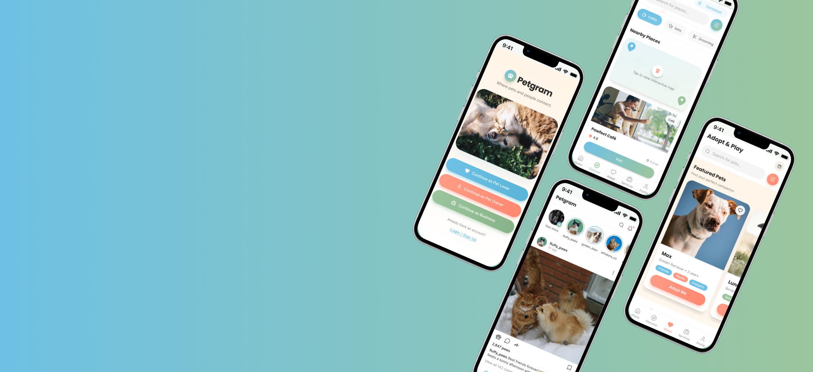
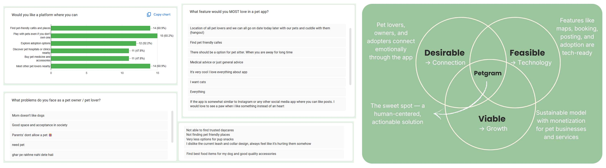

Add petgram-overview.jpg — all app screens together

Bridging emotional connection and real-world pet services in one app.
Overview
Petgram bridges the gap between emotional connection and practical pet services by bringing pet lovers, owners, and businesses into one unified experience.
In today’s world, pets are family, yet no single platform combines sharing, trusted services, adoption, and play together. Petgram is built to fill that gap.
Home Feed · Adopt & Play · Services — the three core screens
The Problem
Despite the growing pet community, users still rely on scattered platforms for services, adoption, and interaction.
Business Gap
Pet businesses lack a focused platform to reach and grow their audience.
Adoption Gap
Adoption relies on scattered posts, with no transparent system to connect animals with the right adopters.
Interaction Gap
People who can’t own pets lack meaningful interaction, while owners need trusted temporary care.
Research & Empathy
Research surveys with pet lovers, owners, and businesses revealed three key user groups that shaped the product.
Aditi
Aspiring Pet Lover · 21
College student in a hostel. Can’t own a pet, but deeply wants one
Goal
→ Spend time with animals
→ Feel part of a pet community
Pain
→ Can’t keep pets
→ No way to interact
Rohan
Pet Owner · 29
IT professional and pet owner seeking reliable care for his Golden Retriever.
Goal
→ Keep his pet safe while away.
→ Find trusted services easily.
Pain
→ Can’t verify quality of services
→ Limited time to research options
Meera
Pet Café Owner · 34
Pet café owner struggling to reach the right audience.
Goal
→ Promote events and services
→ Reach the right audience.
Pain
→ Poor visibility on generic platforms
→ Hard to target the right users

Key Findings from the Survey — Human Centered Design
Design Process
The project balanced exploration and problem-solving across four stages to create a more human-centered pet experience.
Phase 01
Discover
Conducted surveys and empathy mapping to understand key user groups and their needs.
Phase 02
Define
Identified key gaps in pet interaction, service discovery, adoption accessibility, and business visibility.
Phase 03
Develop
Created user flows, app structure, and six core features aligned with real user pain points.
Phase 04
Deliver
Designed a mobile experience focused on accessibility, connection, and community.
App sitemap —
The Solution
Social Feed
Share pet photos, reels, and stories while connecting through likes, comments, and community highlights.
Discover (Nearby)
Interactive map for pet cafés, vets, grooming, and pet services with location-based filters.
Adopt, Sitter & Play
Verified shelters, play sessions for non-owners, and trusted pet sitter discovery.
Marketplace
Shop pet essentials while businesses manage services and bookings from one profile.
User Profiles
Pet details, posts, bookmarks, and badge levels, with analytics and verified business profiles.
Business Tools
Location-based promotions and analytics for small pet businesses.
Petgram — Home Feed, Discover, Adopt & Play, Services & Profile screens
Petgram is more than an app — it's a movement toward making pet care, love, and bonding more inclusive, accessible, and joyful.
Petgram Project Vision"Good design solves problems.
Great design creates meaningful connections."